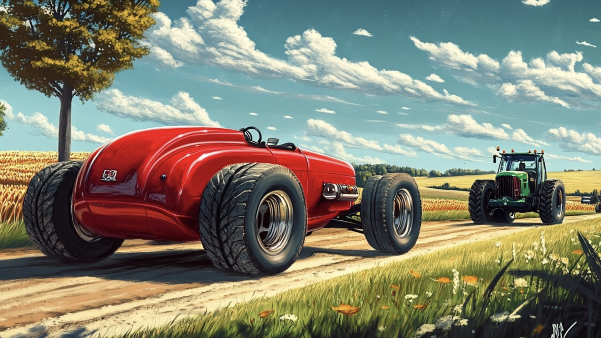
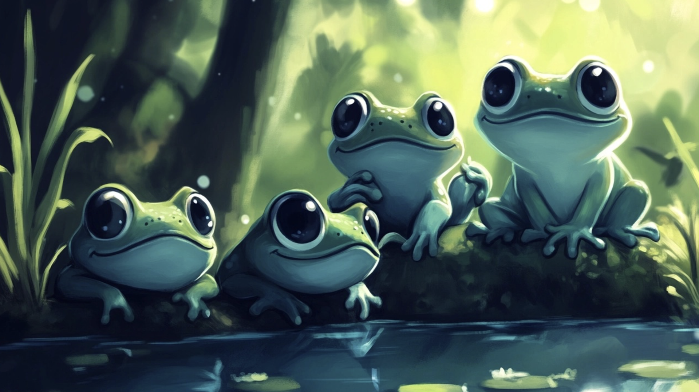
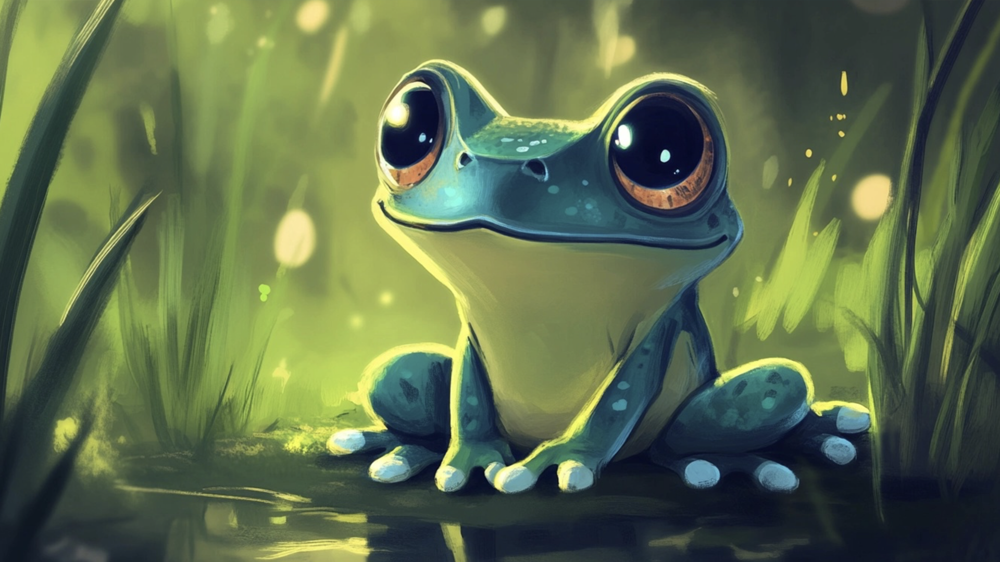

Jednoho krásného rána, kdy slunce vycházelo jako zlatý knoflík na nebi a první vánek hladil trávu na louce, se malý modrý hatchback Matěj proháněl po polní cestě se svým starším bráškou Kryspou, elegantním červeným sporťákem. Vůně rozkvetlých květin se mísila se svěžím vzduchem a cesta byla hladká, posetá drobnými kamínky, které jim občas zadrnčely pod koly.
Když se zastavili na kraji lesa, Matěj najednou zpanikařil. “Kryspo! Něco je špatně!” Kryspa se zastavil a pozorně se podíval na zadní část Matějova podvozku.
“Máš pravdu, bráško! Tvůj výfuk je pryč! Neboj, najdeme ho. Držíme přece vždycky spolu, viď?” povzbuzoval Kryspa a lehce do něj šťouchl svým zrcátkem.
Starý kombajn Hugo
Jako první potkali na kraji pole starý kombajn jménem Hugo. Hugo byl mohutný, s velikými rezavými koly, která vrzala při každém pohybu. Jeho kabina byla tak vysoká, že se Matěj i Kryspa museli zaklonit, aby mu viděli na čelní sklo.
“Hugo, neviděl jsi náhodou můj výfuk? Ztratil jsem ho,” zeptal se Matěj nesměle.
Hugo si promnul svou olejem zašpiněnou lžíci. “Výfuk? Hm, to nevím, ale ráno jsem viděl zvláštní kouř stoupat z lesa. Možná byste to tam mohli prověřit.”
“Zvláštní kouř? To zní zajímavě! Díky, Hugo!” zvolal Kryspa a s Matějem se rozjeli směrem k lesu.
Traktor Karel a kouřící mýtina
Les začínal být hustší a hustší, až se mezi stromy ozvalo hlasité “brum-brum”. Na malé lesní cestičce stál zelený traktor Karel s blatníky špinavými od hlíny.
“Ahoj, Karle!” zvolal Kryspa. “Neviděl jsi náhodou nějaký výfuk?”
Traktor se zamyslel. “Výfuk? No, to nevím, ale když jsem projížděl lesem, viděl jsem na mýtině skřítky, jak staví nějaký divný komín. Vypadal trochu jako váš výfuk.”

“Díky, Karle! Hned to prověříme,” poděkoval Kryspa a se svým bráškou pokračovali dál.
Žabky u tůňky
Cesta je zavedla hlouběji do lesa. Stromy se nejprve vzpínaly jako štíhlé, světlé břízy, jejich listy šuměly ve vánku. Později se proměnily v temné jehličnany, jejichž koruny propouštěly jen málo světla. Vzduch tu byl chladný a voněl smůlou.
U malé lesní tůňky si všimli skotačících žabiček. Skákaly mezi kameny a občas s hlasitým “kvák” skočily do vody. Matěj zastavil a nesměle se jich zeptal: “Žabičky, nevíte, kudy se dostaneme na mýtinu, kde jsou skřítci?”
Jedna z žabiček, která měla na hlavě drobnou korunku z listu, kvákla: “Pokračujte ještě kousek rovně a pak u velkého kamene zabočte doprava. Tam je najdete!”
“Díky, žabičky!” řekl Matěj a s Kryspou pokračovali podle jejich rady.

Skřítci a pec na pizzu
Na mýtině je čekalo překvapení. Slunce tu prosvítalo mezi větvemi a osvětlovalo malou skupinku skřítků, kteří horlivě něco kutali kolem stavby, ze které se kouřilo. Byla to malá pec na pizzu! A místo komína měli… Matějův výfuk!
“To je můj výfuk!” vykřikl Matěj, ale hned couvl. “Kryspo, já tam nechci. Co když jsou skřítci zlí?”
“Bráško, jsem tady s tebou. Jedeme spolu, a já budu mluvit,” řekl Kryspa rozhodně a pomalu se vydal ke skřítkům.
Skřítci si jich všimli a přestali pracovat. Jeden z nich, se zrzavým vousem a čapkou posetou jehličím, přistoupil blíž. “Ahoj, auta! Co vás přivádí na naši mýtinu?” zeptal se zvědavě.
“Tohle je Matějův výfuk,” vysvětlil Kryspa. “Ztratil ho, a bez něj nemůže správně jezdit. Potřebujeme ho zpátky.”
Skřítek se podrbal na hlavě. “Ach, omlouváme se! Našli jsme ho u cesty a mysleli jsme, že je to nějaký starý kus kovu. Můžete chvíli počkat? Děláme pizzu a hned, jak bude hotová, vám výfuk vrátíme a pomůžeme ho připevnit.”
Matěj a Kryspa souhlasili a dívali se, jak skřítci dokončují svou pizzu. Voněla po čerstvých rajčatech, sýru a bylinkách. Když byla hotová, skřítci pizzu rozdělili a podělili se i s autíčky.
Návrat domů
Po výtečné svačince skřítci pomohli Matějovi namontovat výfuk zpátky na místo. “Děkujeme vám! Jste skvělí přátelé,” řekl Matěj s úsměvem.
“Rádo se stalo! A přijďte zase někdy na pizzu!” zvolali skřítci, mávajíce jim na rozloučenou.
Cestou domů si Matěj a Kryspa povídali o tom, kolik dobrodružství zažili a jak potkali nové kamarády. Slunce zapadalo za les, nebe se barvilo do oranžova a vzduch byl plný vůně borovic.
“Kryspo, díky, že jsi byl se mnou. S tebou se nebojím ničeho,” řekl Matěj, když přijížděli ke garáži.
“Bráško, vždycky budeme držet spolu,” odpověděl Kryspa a oba se spokojeně schoulili ve své garáži.
Věděli jste, že...
Žabky mají fascinující schopnost dýchat kůží, což se nazývá kožní dýchání. Tento proces funguje následovně: 1. Absorpce kyslíku: Žabky přijímají kyslík přímo z vody nebo vzduchu skrz jejich vlhkou pokožku. 2. Kožní povrch: Kůže žabek je tenká a bohatě prokrvená, což umožňuje efektivní výměnu plynů. 3. Dýchání pod vodou: Během hibernace pod vodou žabky spoléhají výhradně na kožní dýchání, protože plíce nejsou aktivní. Tato jedinečná adaptace jim pomáhá přežít v různých prostředích, od souše po vodní ekosystémy.
